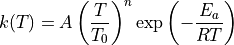
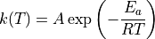

Advanced Features¶
Flexible coordinates (xyz) input¶
The xyz attribute of an ARCSpecies object (whether a TS or not) is extremely flexible. It could be a multiline string containing the coordinates, or a list of several such multiline strings. It could also contain valid file paths to ESS input files, output files, XYZ format files, or ARC’s conformers (before/after optimization) files. See the examples.
Specify a specific job type to execute¶
To run ARC with a particular job type only, set specific_job_type to the job type you want.
Currently, ARC supports the following job types: conf_opt, conf_sp, opt, fine, freq,
sp, rotors, onedmin, orbitals, bde, irc.
Note: specific_job_type takes higher precedence than job_types. If you specify both attributes, ARC will
dismiss the given job_types and will only populate the job_types dictionary using the given
specific_job_type.
For bond dissociation energy calculation, the following two job_types specifications are equivalent:
Specification 1:
job_types:
rotors: false
conformers: false
fine: true
freq: true
opt: true
sp: true
bde: true
Specification 2:
specific_job_type: bde
Levels of theory¶
ARC’s Level class is meant to allow detailed and comprehensive specification of a level of theory. ARC allows users to specify a level of theory per job type, with some shortcuts as described below. Job types for which levels of theory may be specified (otherwise ARC will assume defaults values) are:
conformer_opt_level
conformer_sp_level
ts_guess_level
opt_level
freq_level
sp_level
composite_method
scan_level
irc_level
orbitals_level
Each level may be defined either by a string or a dictionary.
Specifying a string may only contain a method and a basis set where applicable, e.g.,
CBS-QB3 or wb97xd/def2-tzvp. The dictionary allows additional
arguments to be defined: method, basis, auxiliary_basis, dispersion,
cabs (complementary auxiliary basis set for F12 calculations), software,
software_version (not used), solvation_method, solvent, solvation_scheme_level, args.
For example:
conformer_opt_level: {'method': 'b3lyp',
'basis': '6-31g(d,p)',
'dispersion': 'empiricaldispersion=gd3bj',
}
specifies b3lyp/6-31g(d,p) model chemistry along with the
D3 version of Grimme’s dispersion with Becke-Johnson damping for optimizing conformers.
Note that empiricaldispersion=gd3bj is the format required by Gaussian.
In general, different ESS have various formats for specifying model chemistry.
Make sure to pass the correct format based on the intended ESS that should be used.
Another example:
sp_level: {'method': 'DLPNO-CCSD(T)-F12',
'basis': 'cc-pVTZ-F12',
'auxiliary_basis': 'aug-cc-pVTZ/C cc-pVTZ-F12-CABS',
'args': {'keyword' :{'opt_convergence': 'TightOpt'}},
'software': 'orca',
}
specifies DLPNO-CCSD(T)-F12/cc-pVTZ-F12 model chemistry along with two auxiliary basis sets,
aug-cc-pVTZ/C and cc-pVTZ-F12-CABS, with TightOpt for a single point energy calculation.
THe following are examples for equivalent definitions:
opt_level = 'apfd/def2tzvp'
opt_level = {'method': 'apfd', 'basis': 'def2tzvp'}
conformer_opt_level = 'PM6'
conformer_opt_level = {'method': 'PM6'}
Note that the cabs and solvation_scheme_level arguments currently have no effect
and will be implemented in future versions. The software argument is automatically determined
unless specified by the user.
ARC also supports an additional shortcut argument, level_of_theory,
to simultaneously specify opt_level, freq_level, sp_level, and scan_level.
For example:
level_of_theory: 'dlpno-ccsd(T)/def2tzvp//apfd/def2svp'
is a shortcut for:
opt_level = {'method': 'apfd', 'basis': 'def2svp'}
freq_level = {'method': 'apfd', 'basis': 'def2svp'}
scan_level = {'method': 'apfd', 'basis': 'def2svp'}
sp_level = {'method': 'dlpno-ccsd(T)', 'basis': 'def2tzvp'}
Note: If level_of_theory does not contain the // deliminator but does contain \/,
it is interpreted as intended for running all opt, freq, scan, and sp job types at that level.
For example:
level_of_theory: 'wb97xd/def2svp'
is equivalent to:
opt_level = {'method': 'wb97xd', 'basis': 'def2svp'}
freq_level = {'method': 'wb97xd', 'basis': 'def2svp'}
scan_level = {'method': 'wb97xd', 'basis': 'def2svp'}
sp_level = {'method': 'wb97xd', 'basis': 'def2svp'}
Note: If level_of_theory does not contain any deliminator (neither // nor \/), it is interpreted as a
composite method.
For example:
level_of_theory: 'cbs-qb3'
is interpreted as:
composite_method: 'cbs-qb3'
If a semi-empirical method was meant to be used (e.g., AM1), it must be set using the job-specific level of theory
arguments (e.g., opt_level, etc.) using the dictionary format, rather than the level_of_theory shortcut
argument.
For example, to specify AM1 as the geometry optimization method, please use:
opt_level = {'method': 'AM1'}
To avoid conflicts and confusion, ARC will raise an InputError if
level_of_theory is specified along with composite_method, opt_level,
or sp_level.
A notable argument is args, which is a 2-level nested dictionary
of additional directives to pass to the ESS.
There are only two allowed keys for the first level, keyword and block.
Entries under keyword will be added to the directive line of the ESS input file as keywords,
while entries under block are treated as multiline strings and will be added after the
directive line of the ESS input file. The corresponding values for these keywords are dictionaries as well.
While specific keys are used by ARC internally for troubleshooting,
users are encouraged use general as a key for any additional values.
ARC can deduce the software to be used per level of theory using heuristics, yet since the values of args
are software-dependent, it is highly recommended that users also specify the optional software argument
to avoid using an incompatible software. For convenience,
args can also be inputted as a sting or a list of strings which will be internallt converted to the correct
dictionary format with keyword and general keys.
For example:
args = {'keyword' :{'opt_convergence': 'TightOpt'},
'block': {'general': '%scf DryRun true \n end'}}
Another example:
args = {'keyword' :{'general': 'iop(99/33=1)'}}
will append iop(99/33=1) to the respective Gaussian job input file.
Adaptive levels of theory¶
ARC allows users to adapt the level of theory to the size of the molecule.
To do so, pass the adaptive_levels attribute, which is a dictionary of
levels of theory for ranges of the number of heavy (non-hydrogen) atoms in the
molecule. Keys are tuples of (min_num_atoms, max_num_atoms), values are
dictionaries with the a tuple of job type as the key (opt, freq, sp, scan)
and the respective level of theory as a string or a dictionary is the value.
Don’t forget to bound the entire range between 1 and inf, also make sure
there aren’t any gaps in the heavy atom ranges. For example:
adaptive_levels = {(1, 5): {('opt', 'freq'): 'wb97xd/6-311+g(2d,2p)',
'sp': 'ccsd(t)-f12/aug-cc-pvtz-f12'},
(6, 15): {('opt', 'freq'): 'b3lyp/cbsb7',
'sp': 'dlpno-ccsd(t)/def2-tzvp/c'},
(16, 30): {('opt', 'freq'): 'b3lyp/6-31g(d,p)',
'sp': 'wb97xd/6-311+g(2d,2p)'},
(31, 'inf'): {('opt', 'freq'): 'b3lyp/6-31g(d,p)',
'sp': 'b3lyp/6-311+g(d,p)'}}
Note that job types which are not specified in adaptive_levels will use no-adaptive
(defined separately e.g., via opt_level, or using ARC’s defaults.
Control job memory allocation¶
To specify the amount of memory for all jobs in an ARC project,
set job_memory with a positive integer value (units are GB).
Note that the total memory per node can be modified by setting the value of memory
in the servers dictionary under settings.py.
This value will be treated as the maximum allowable memory per node, and memory-related troubleshooting
methods will not be allowed to request more than this value.
If job_memory is not defined, ARC will initialize each job using 14 GB memory by default.
In case a job crashes due to insufficient memory, ARC will try to resubmit that job asking for
a higher memory allocation up to the specified maximal node memory.
Using a fine DFT grid for optimization¶
This option is turned on by default. If you’d like to turn it off,
set fine in the job_types dictionary to False.
If turned on, ARC will spawn another DFT optimization job after the first one converges, now with a fine grid settings, using the already optimized geometry.
It is also possible to instruct ARC not to run the first optimization job,
and instead use a fine grid to begin with. To do so, set fine: True but opt: False.
Note that this argument is called fine in ARC, although in practice
it directs the ESS to use an ultrafine grid. See, for example, this study
describing the importance of the DFT grid.
In Gaussian, fine will add the following directive:
scf=(tight, direct) integral=(grid=ultrafine, Acc2E=12)
In QChem, it will add the following directives:
GEOM_OPT_TOL_GRADIENT 15
GEOM_OPT_TOL_DISPLACEMENT 60
GEOM_OPT_TOL_ENERGY 5
XC_GRID 3
In TeraChem, it will add the following directives:
dftgrid 4
dynamicgrid yes
Rotor scans¶
This option is turned on by default. If you’d like to turn it off,
set rotors in the job_types dictionary to False.
ARC will perform 1D (one dimensional) rotor scans for all possible unique internal rotors in the species,
The rotor scan resolution is 8 degrees by default (scanning 360 degrees overall).
This can be changed via the rotor_scan_resolution parameter in the settings.
Rotors are invalidated (not used for thermo / rate calculations) if at least one barrier
is above a maximum threshold (40 kJ/mol by default), if the scan is inconsistent by more than 30%
between two consecutive points, or if the scan is inconsistent by more than 5 kJ/mol
between the initial anf final points.
All of the above settings can be modified in the settings.py file.
ND Rotor scans¶
ARC also supports ND (N dimensional, N >= 1) rotor scans. There are seven different ND types to execute:
A1. Generate all geometries in advance (brute force), and calculate single point energies (nested or diagonalized).
A2. Generate all geometries in advance (brute force), and run constraint optimizations (nested or diagonalized).
Derive the geometry from the previous point (continuous) and run constraint optimizations (nested or diagonalized).
Let the ESS guide the optimizations.
Each of the options above (A or B) can be either “nested” (considering all ND dihedral combinations) or “diagonal” (resulting in a unique 1D rotor scan across several dimensions). The seventh option (C) allows the ESS to control the ND scan, which is similar in principal to option B, but not directly controlled by ARC.
The optional primary keys are:
brute_force_spbrute_force_optcont_optess
The brute force methods will generate all the geometries in advance and submit all relevant jobs simultaneously. The continuous method will wait for the previous job to terminate, and use its geometry as the initial guess for the next job.
Another set of three keys is allowed, adding _diagonal to each of the above keys.
The secondary keys are therefore:
brute_force_sp_diagonalbrute_force_opt_diagonalcont_opt_diagonal
Specifying _diagonal will increment all the respective dihedrals together, resulting in a 1D scan instead of
an ND scan. Values are nested lists. Each value is a list where the entries are either pivot lists (e.g., [1, 5])
or lists of pivot lists (e.g., [[1, 5], [6, 8]]), or a mix (e.g., [[4, 8], [[6, 9], [3, 4]]). The requested
directed scan type will be executed separately for each list entry. A list entry that contains only two pivots
will result in a 1D scan, while a list entry with N pivots will consider all of them, and will result in an ND scan
(if _diagonal is not specified). Note that indices are 1-indexed.
ARC will generate geometries using the rotor_scan_resolution argument in settings.py.
Note: An 'all' string entry is also allowed in the value list, triggering a directed internal rotation scan for all
torsions in the molecule. If 'all' is specified within a second level list, then all the dihedrals will be considered
together. Currently ARC does not automatically identify torsions to be treated as ND, and this attribute must be
specified by the user. An additional supported key is ‘ess’, in which case ARC will allow the ESS to take care of
spawning the ND continuous constrained optimizations.
To execute ND rotor scans, first set the rotors job type to True.
Next, set the directed_rotors attribute of the relevant species. Below are several examples.
To run all dihedral scans of a species separately using brute force sp (each as 1D):
spc1 = ARCSpecies(label='some_label', smiles='species_smiles', directed_rotors={'brute_force_sp': ['all']})
To run all dihedral scans of a species as a conjugated scan (ND, N = the number of torsions):
spc1 = ARCSpecies(label='some_label', smiles='species_smiles', directed_rotors={'cont_opt': [['all']]})
Note the change in list level (all is either within one or two nested lists) in the above examples.
To run specific dihedrals as ND (here all 2D combinations for a species with 3 torsions):
spc1 = ARCSpecies(label='C4O2', smiles='[O]CCCC=O', xyz=xyz,
directed_rotors={'brute_force_opt': [[[5, 3], [3, 4]], [[3, 4], [4, 6]], [[5, 3], [4, 6]]]})
Note: ND rotors are still not incorporated into the molecular partition function, so currently will not affect thermo or rates.
Note: Any torsion defined as part of an ND rotor scan will not be spawned for that species as a separate 1D scan.
Warning: Job arrays have not been incorporated into ARC yet. Spawning ND rotor scans will result in many individual jobs being submit to your server queue system.
Electronic Structure Software Settings¶
ARC currently supports the following electronic structure software (ESS):
ARC also supports the following (non-ESS) software:
You may pass an ESS settings dictionary to direct ARC where to find each software:
ess_settings:
gaussian:
- server1
- server2
gromacs:
- server1
molpro:
- server1
onedmin:
- server2
qchem:
- server1
Troubleshooting¶
ARC has fairly good auto-troubleshooting methods.
However, at times a user might know in advance that a particular additional keyword
is required for the calculation. In such cases, simply pass the relevant keyword
in the initial_trsh (trsh stands for troubleshooting) dictionary passed to ARC:
initial_trsh:
gaussian:
- iop(1/18=1)
molpro:
- shift,-1.0,-0.5;
qchem:
- GEOM_OPT_MAX_CYCLES 250
ESS check files¶
ARC copies check files from previous Gaussian and TeraChem jobs,
and uses them when spawning additional jobs for the same species.
When ARC terminates, it will attempt to delete all downloaded checkfiles (remote copies remain).
To change this behaviour and keep the check files, set the keep_checks attribute to True
(it is False by default).
Frequency scaling factors¶
ARC will look for appropriate available frequency scaling factors in Arkane
for the respective freq_level. If a frequency scaling factor isn’t available, ARC will attempt
to determine it using Truhlar’s method. This involves spawning fine optimizations and frequency
calculations for a dataset of 15 small molecules. To avoid this, either pass a known frequency scaling
factor using the freq_scale_factor attribute (see examples), or set the
calc_freq_factor attribute to False (it is True by default).
Isomorphism checks¶
When a species is defined using a 2D graph (i.e., SMILES, AdjList, or InChI), an isomorphism check
is performed on the optimized geometry (all conformers and final optimization).
If the molecule perceived from the 3D coordinate is not isomorphic
with the input 2D graph, ARC will not spawn any additional jobs for the species, and will not use it further
(for thermo and/or rates calculations). However, sometimes the perception algorithm doesn’t work as expected (e.g.,
issues with charged species and triplets are known). To continue spawning jobs for all species in an ARC
project, pass True to the allow_nonisomorphic_2d argument (it is False by default).
Using a non-default project directory¶
If ARC is run from the terminal with an input/restart file
then the folder in which that file is located becomes the Project’s folder.
If ARC is run using the API, a folder with the Project’s name is created under ARC/Projects/.
To change this behavior, you may request a specific project folder. Simply pass the desired project
folder path using the project_directory argument. If the folder does not exist, ARC will create it
(and all parent folders, if necessary).
Visualizing molecular orbitals (MOs)¶
There are various ways to visualize MOs. One way is to open a Gaussian output file using GaussView.
ARC supports an additional way to generate high quality and good looking MOs.
Simply set the orbitals entry of the job_types dictionary to True (it is False by default`).
ARC will spawn a QChem job with the
PRINT_ORBITALS TRUE directive using NBO,
and will copy the resulting FCheck output file.
Make sure you set the orbitals level of theory to the desired level in default_levels_of_theory
in settings.py.
Open the resulting FCheck file using IQMol
to post process and save images.
Consider a specific diastereomer¶
ARC’s conformer generation module will consider by default all non-enantiomeric (non-mirror) diastereomers,
using chiral (tetrahedral) carbon atoms, chiral inversion modes in nitrogen atoms, and cis/trans double bonds.
To consider a specific diastereomer, pass the 3D xyz coordinates when defining the species, and set the
consider_all_diastereomers species flag to False (it is True by default). For example, the following code
will cause ARC to only consider the R-Z diastereomer of the following hypothetical species:
spc1_xyz = """Cl 1.47566594 -2.36900082 -0.86260264
O -1.34833561 1.76407680 0.29252133
C 1.46682130 -0.58010226 -0.70920153
C 0.81289268 -0.14477878 0.61006147
C 2.90276866 -0.07697610 -0.80213588
C -3.09903967 0.08314581 0.61641835
C -1.64512811 0.43845470 0.53602810
C -0.65975628 -0.45946534 0.67414755
H 0.89577875 -0.19512286 -1.56141944
H 0.97218270 0.93173379 0.74977707
H 1.30829197 -0.62970434 1.46110152
H 3.36555034 -0.38002993 -1.74764205
H 3.51837776 -0.46405162 0.01733990
H 2.93198350 1.01693209 -0.75630452
H -3.57828825 0.63692499 1.43000638
H -3.60256180 0.33896163 -0.32130952
H -3.25218225 -0.98524107 0.80024046
H -0.91263085 -1.50255031 0.85455686
H -2.18255121 2.26238957 0.24010821"""
spc1 = ARCSpecies(label='CC(Cl)CC=C(C)O', smiles='CC(Cl)CC=C(C)O', xyz=spc1_xyz, consider_all_diastereomers=False)
Note that the specified xyz don’t have to be the lowest energy conformer (the goal is of course to find it), but just be an arbitrary conformer with the required chiralities to be preserved.
Don’t generate conformers for specific species¶
The conf_opt entry in the job_types dictionary is a global flag,
affecting conformer generation of all species in the project.
If you’d like to avoid generating conformers just for selected species,
pass their labels to ARC in the dont_gen_confs list, e.g.:
project: arc_demo_selective_confs
dont_gen_confs:
- propanol
species:
- label: propane
smiles: CCC
xyz: |
C 0.0000000 0.0000000 0.5863560
C 0.0000000 1.2624760 -0.2596090
C 0.0000000 -1.2624760 -0.2596090
H 0.8743630 0.0000000 1.2380970
H -0.8743630 0.0000000 1.2380970
H 0.0000000 2.1562580 0.3624930
H 0.0000000 -2.1562580 0.3624930
H 0.8805340 1.2981830 -0.9010030
H -0.8805340 1.2981830 -0.9010030
H -0.8805340 -1.2981830 -0.9010030
H 0.8805340 -1.2981830 -0.9010030
- label: propanol
smiles: CCCO
xyz: |
C -1.4392250 1.2137610 0.0000000
C 0.0000000 0.7359250 0.0000000
C 0.0958270 -0.7679350 0.0000000
O 1.4668240 -1.1155780 0.0000000
H -1.4886150 2.2983600 0.0000000
H -1.9711060 0.8557990 0.8788010
H -1.9711060 0.8557990 -0.8788010
H 0.5245130 1.1136730 0.8740840
H 0.5245130 1.1136730 -0.8740840
H -0.4095940 -1.1667640 0.8815110
H -0.4095940 -1.1667640 -0.8815110
H 1.5267840 -2.0696580 0.0000000
In the above example, ARC will only generate conformers for propane (not for propanol). For propane, it will compare the selected conformers against the user-given xyz guess using the conformer level DFT method, and will take the most stable structure for the rest of the calculations, regardless of its source (ARC’s conformers or the user guess). For propanol, on the other hand, ARC will not attempt to generate conformers, and will simply use the user guess.
Note: If a species label is added to the dont_gen_confs list, but the species has no 3D
coordinates, ARC will generate conformers for it.
Writing an ARC input file using the API¶
Writing in YAML isn’t very intuitive for many, especially without a good editor. You could use ARC’s API to define your objects, and then dump it all in a YAML file which could be read as an input in ARC:
from arc.species.species import ARCSpecies
from arc.common import save_yaml_file
input_dict = dict()
input_dict['project'] = 'Demo_project_input_file_from_API'
input_dict['job_types'] = {'conf_opt': True,
'opt': True,
'fine': True,
'freq': True,
'sp': True,
'rotors': True,
'conf_sp': False,
'orbitals': False,
'lennard_jones': False,
}
spc1 = ARCSpecies(label='NO', smiles='[N]=O')
adj1 = """multiplicity 2
1 C u0 p0 c0 {2,D} {4,S} {5,S}
2 C u0 p0 c0 {1,D} {3,S} {6,S}
3 O u1 p2 c0 {2,S}
4 H u0 p0 c0 {1,S}
5 H u0 p0 c0 {1,S}
6 H u0 p0 c0 {2,S}"""
xyz2 = [
"""O 1.35170118 -1.00275231 -0.48283333
C -0.67437022 0.01989281 0.16029161
C 0.62797113 -0.03193934 -0.15151370
H -1.14812497 0.95492850 0.42742905
H -1.27300665 -0.88397696 0.14797321
H 1.11582953 0.94384729 -0.10134685""",
"""O 1.49847909 -0.87864716 0.21971764
C -0.69134542 -0.01812252 0.05076812
C 0.64534929 0.00412787 -0.04279617
H -1.19713983 -0.90988817 0.40350584
H -1.28488154 0.84437992 -0.22108130
H 1.02953840 0.95815005 -0.41011413"""]
spc2 = ARCSpecies(label='vinoxy', xyz=xyz2, adjlist=adj1)
spc_list = [spc1, spc2]
input_dict['species'] = [spc.as_dict() for spc in spc_list]
save_yaml_file(path='some/path/to/desired/folder/input.yml', content=input_dict)
The above code generated the following input file:
project: Demo_project_input_file_from_API
job_types:
rotors: true
conf_opt: true
fine: true
freq: true
lennard_jones: false
opt: true
orbitals: false
sp: true
species:
- E0: null
arkane_file: null
bond_corrections:
N=O: 1
charge: 0
external_symmetry: null
force_field: MMFF94
generate_thermo: true
is_ts: false
label: 'NO'
long_thermo_description: 'Bond corrections: {''N=O'': 1}
'
mol: |
multiplicity 2
1 N u1 p1 c0 {2,D}
2 O u0 p2 c0 {1,D}
multiplicity: 2
neg_freqs_trshed: []
number_of_rotors: 0
optical_isomers: null
rotors_dict: {}
t1: null
- E0: null
arkane_file: null
bond_corrections:
C-H: 3
C-O: 1
C=C: 1
charge: 0
conformer_energies:
- null
- null
conformers:
- |-
O 1.35170118 -1.00275231 -0.48283333
C -0.67437022 0.01989281 0.16029161
C 0.62797113 -0.03193934 -0.15151370
H -1.14812497 0.95492850 0.42742905
H -1.27300665 -0.88397696 0.14797321
H 1.11582953 0.94384729 -0.10134685
- |-
O 1.49847909 -0.87864716 0.21971764
C -0.69134542 -0.01812252 0.05076812
C 0.64534929 0.00412787 -0.04279617
H -1.19713983 -0.90988817 0.40350584
H -1.28488154 0.84437992 -0.22108130
H 1.02953840 0.95815005 -0.41011413
external_symmetry: null
force_field: MMFF94
generate_thermo: true
is_ts: false
label: vinoxy
long_thermo_description: 'Bond corrections: {''C-O'': 1, ''C=C'': 1, ''C-H'': 3}
'
mol: |
multiplicity 2
1 O u1 p2 c0 {3,S}
2 C u0 p0 c0 {3,D} {4,S} {5,S}
3 C u0 p0 c0 {1,S} {2,D} {6,S}
4 H u0 p0 c0 {2,S}
5 H u0 p0 c0 {2,S}
6 H u0 p0 c0 {3,S}
multiplicity: 2
neg_freqs_trshed: []
number_of_rotors: 0
optical_isomers: null
rotors_dict: {}
t1: null
Calculating BDEs (bond dissociation energies)¶
To direct ARC to calculate BDEs for a species, set the bde job type to True,
and set the requested atom indices (1-indexed) in the species .bdes argument
as a list of tuples representing indices of bonded atoms (via a single bond)
between which the BDE will be calculated (a list of lists is also allowed and will be converted),
E.g., a species can be defined as:
spc1 = ARCSpecies(label='label1', smiles='CC(NO)C', xyz=xyz1, bdes=[(1, 2), (5, 8)])
Note that the bdes species argument also accepts the string 'all_h' as one of the entries
in the list, directing ARC to calculate BDEs for all hydrogen atoms in the species.
Below is an example requesting all hydrogen BDEs in ethanol including the C--O BDE:
project: ethanol_BDEs
job_types:
rotors: true
conf_opt: true
fine: true
freq: true
opt: true
sp: true
bde: true
species:
- label: ethanol
smiles: CCO
xyz: |
O 1.20823797 -0.43654321 0.79046266
C 0.38565457 0.37473766 -0.03466399
C -0.94122817 -0.32248828 -0.24592109
H 0.89282946 0.53292877 -0.99112072
H 0.23767951 1.34108205 0.45660206
H -0.79278514 -1.30029213 -0.71598886
H -1.43922693 -0.50288055 0.71249177
H -1.60098471 0.27712988 -0.87920708
H 2.04982343 0.03632579 0.90734524
bdes:
- all_h
- - 1
- 2
Note: In the above example, the BDE calculation is not based on the geometry specified by the given xyz, but on the optimal geometry determined by ARC. To calculate the same BDEs in ethanol using specified geometry, use:
project: ethanol_BDEs_specific_geometry
specific_job_type : bde
species:
- label: ethanol
smiles: CCO
xyz: |
O 1.20823797 -0.43654321 0.79046266
C 0.38565457 0.37473766 -0.03466399
C -0.94122817 -0.32248828 -0.24592109
H 0.89282946 0.53292877 -0.99112072
H 0.23767951 1.34108205 0.45660206
H -0.79278514 -1.30029213 -0.71598886
H -1.43922693 -0.50288055 0.71249177
H -1.60098471 0.27712988 -0.87920708
H 2.04982343 0.03632579 0.90734524
bdes:
- all_h
- - 1
- 2
Note: The BDEs are determined based on E0, therefore both sp and freq jobs
must be spawned (and successfully terminated for all species and fragments).
The calculated BDEs are reported in the log file as well as in a designated BDE_report.yml
file under the output directory in the project’s folder. Units are kJ/mol.
Disable comparisons with the RMG database¶
By default, at the end of an ARC job, ARC will try to compare the calculated thermochemistry and kinetics to estimates from the RMG database to assist the human reality-check. The comparison is saved as a parity plot in the output directory.
Sometimes though, it is desirable to disable these comparisons with the RMG database. For example, although ARC will not crash due to any exceptions encountered while making the parity plots, it makes sense to disable these comparisons when dealing with species that cannot be estimated by the RMG database (e.g. because of the presence of atom types that are currently not supported). In other circumstances it may make sense to disable this comparison simply to save time by not having to load the entire RMG database.
To disable ARC from generating these parity plots, simply pass the following argument to ARC:
compare_to_rmg: False
With this option specified, ARC will not load the RMG database, and parity plots will not be generated.
Use solvent corrections¶
This feature is currently only implemented for jobs spawned using Gaussian.
The solvation argument of a level of theory, if not None, requests that a calculation
be performed in the presence of a solvent by placing the solute (the species) in a cavity within
the solvent reaction field. This argument is a dictionary, with the following keys:
‘method’ (optional values: ‘pcm’ (default), ‘cpcm’, ‘dipole’, ‘ipcm’, ‘scipcm’)
‘solvent’ (values are strings of “known” solvents, default is “water”)
Example:
opt_level = {'method': 'wb97xd',
'basis': 'def2tzvp',
'solvation': {'method': 'pcm',
'solvent: 'DiethylEther'},
}
See https://gaussian.com/scrf/ for more details.
Batch delete ARC jobs¶
DANGER ZONE: Make sure you understand what you’re doing before running this script! Data of running jobs will be lost.
ARC has a feature that deletes all ARC-spawned jobs from selected servers and projects.
To delete all ARC jobs, type in a terminal in the ARC code folder after activating arc_env:
python arc/utils/delete.py -a
You can also request to delete jobs from a specific server by specifying its name after the -s flag:
python arc/utils/delete.py -s server1 -a
To delete jobs from a specific ARC project, pass the project’s name after the -p flag:
python arc/utils/delete.py -p project1
Alternatively (since project names might be long and not always shown in full when requesting the server job status), one can supply an ARC job ID, and ALL jobs related to the project of the given job ID will be deleted (NOT only the given job!):
python arc/utils/delete.py -j a_54836
Note that either a -a, a -p, or a -j flag must be given.
All flags can be combined with the optional -s flag.
Choose modified/classical Arrhenius equation form for rate coefficient fitting¶
ARC uses statistical mechanics software packages (e.g., Arkane) to compute rate coefficients for chemical reactions from the results of quantum chemistry calculations. By default, ARC instructs the statmech programs to compute rate coefficients in the modified three-parameter Arrhenius equation format:

Alternatively, the user may request to compute the rate coefficients in the classical two-parameter Arrhenius format:

by setting the three_params attribute to False (it is True by default). For example:
project: use_classical_arrhenius_eqn_for_rate_calc_demo
three_params: False
instructs the relevant statmech program to compute rate coefficients in the classical two-parameter Arrhenius format for all reactions in the same ARC project.
Advanced: to recompute the rate coefficient in the modified three-parameter Arrhenius equation format, simply change
three_params to True in the ARC project’s restart.yml file, and then restart ARC.